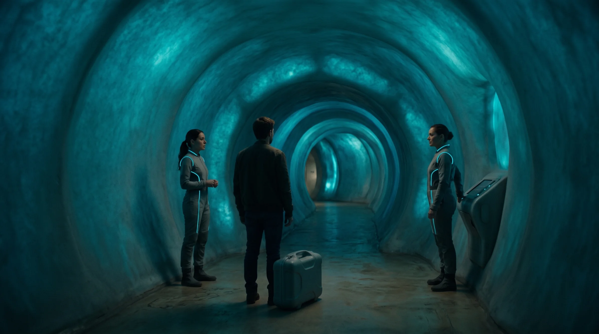
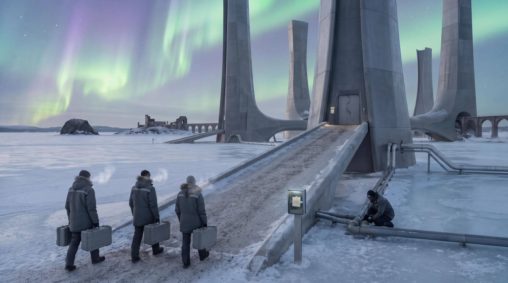
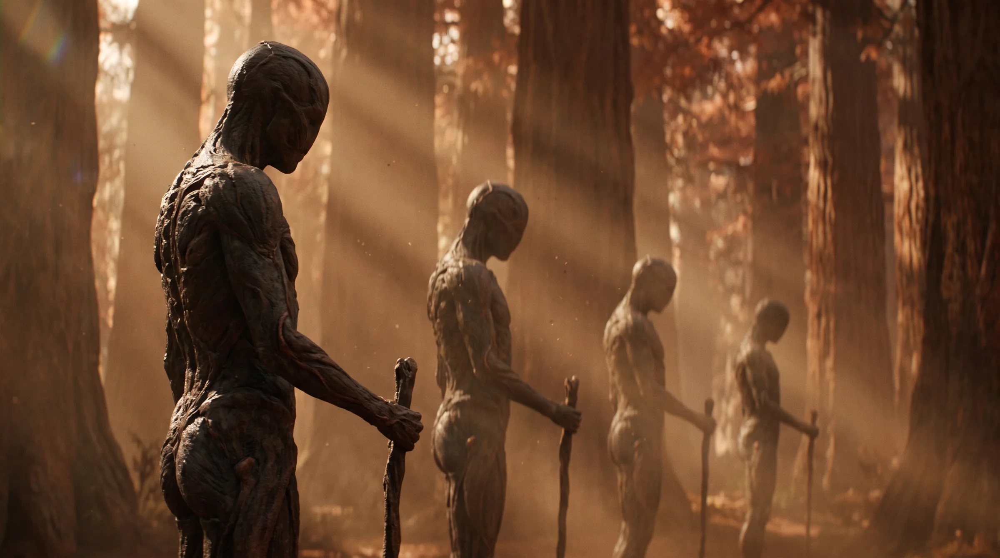

Book Three · February 2097 – January 2098
The Open Hand
Can the Hollow be killed, and what will each of them give up to do it?
The book
February 2097 – January 2098. Mars is approaching again. The signal delay falls from 13.7 minutes in February to 3.2 minutes at opposition on 4 August 2097, the closest Mars will come in decades. Each chapter's shrinking delay is the countdown the reader feels. At opposition the Hollow's channel is about 49 times stronger than at the blackout. It intends to use that day to join everyone linked to it. The Open Hand must land first.
Before the book opens. After Rachel shut the Gate, it kept acting. Wáng Sù took it over and legitimised it as the Directorate, a supervised, "tamed" coordinating system run from Singapore. It saves lives daily, and Rachel lost her protection and her influence. Kaelin answered the copy. The real Aur'k stayed on Mars. Elena stayed too, helping Zhenyth repair the Preserve's torn tissue, grieving Ines, and listening at the boundary longer than she should have.
- Book question
- Can the Hollow be killed, and what will each of them give up to do it?
- Answer
- Yes, by everyone letting go at once.
- Viewpoints
- Elena 12 chapters, Kaelin 7, Rachel 7, Aur'k 4.
- The bind
- To free the world, they must make it less safe and let go of the people the Hollow holds
Act I
The sleepers
Elena comes home to a world that loves the Directorate. Elena and Rachel prove the sleepers are being taken, that the Directorate saves what feeds it, and that the Fall was allowed to happen. The deadline is found
Information · goal. The Directorate's mercy is a feeding pattern with a deadline, and stopping it needs a plan nobody can command

CH 01
Arrivals
New York · orbital arrivals hall
 Elena
Elena
SIGNAL DELAY 13.6 MIN
Read
CH 02
Two of him
New York · the flat; Directorate field rescue
 Kaelin
Kaelin
SIGNAL DELAY 13.4 MIN
Read
CH 03
Overridden
New York · the Battery
 Rachel
Rachel
SIGNAL DELAY 13.1 MIN
ReadCH 04
Forced together
the Battery
Elena
SIGNAL DELAY 13.1 MIN
Read
CH 05
Arrival
Baikal Complex · a collapsed mine
Kaelin
SIGNAL DELAY 12.5 MIN
Read
CH 06
The deadline
Vila Verde
Elena
SIGNAL DELAY 11.8 MIN
ReadCH 07
Sworn
Singapore · joint session of both blocs
Rachel
SIGNAL DELAY 11.5 MIN
ReadCH 08
No switch
Vila Verde
Elena
SIGNAL DELAY 11.1 MIN
ReadAct II-A
The plan
The Open Hand is built on Daniel's mesh. The real Aur'k comes home to his copy. Midpoint: the plan is locked, and the Hollow learns it
Method · information. The plan becomes an invitation rather than an order, and the Hollow learns it through the copy
CH 09
Help them
the flat
Kaelin
SIGNAL DELAY 10.7 MIN
ReadCH 10
Invitation
Vila Verde and the mesh
Elena
SIGNAL DELAY 9.9 MIN
ReadCH 11
Transit
the ship · Mars–Earth transit
 Aur'k
Aur'k
SIGNAL DELAY 9.2 MIN
ReadCH 12
Hello
arrivals hall; the flat
Kaelin
SIGNAL DELAY 7.8 MIN
ReadCH 13
My street
the Battery; Joaquín's district
Rachel
SIGNAL DELAY 7.4 MIN
ReadCH 14
The missing day
the flat
Aur'k
SIGNAL DELAY 6.9 MIN
ReadCH 15
Locked
Vila Verde
Elena
SIGNAL DELAY 6.4 MIN
ReadAct II-B
The offer
Wáng's reform, the heat-dome counterattack, Soria's offer. Elena nearly goes in alone, then tells Daniel. Late revelation: the copy doesn't know what he is
Relationship · moral frame. Elena stops going alone, Kaelin stops deciding for others, and the copy's personhood becomes the question the plan can't answer
CH 16
Reform
Singapore
Rachel
SIGNAL DELAY 5.9 MIN
ReadCH 17
Heat dome
the Gulf Crescent and the Mediterranean
Kaelin
SIGNAL DELAY 5.2 MIN
Read
CH 18
Proof of life
New York · the Spire line's sealed vault
Elena
SIGNAL DELAY 4.8 MIN
ReadCH 19
The booking
Vila Verde
Aur'k
SIGNAL DELAY 4.5 MIN
ReadCH 20
The threshold
the Spire line's vault; Vila Verde
Elena
SIGNAL DELAY 4.4 MIN
ReadCH 21
No
the Battery
Rachel
SIGNAL DELAY 4.0 MIN
ReadCH 22
The raid
Vila Verde
Elena
SIGNAL DELAY 3.5 MIN
ReadCH 23
Not for me
the flat
Kaelin
SIGNAL DELAY 3.3 MIN
ReadAct III
Letting go
Opposition day across three worlds. Soria chooses. The Hollow goes silent. The cost, and the people who remain
Authority · moral frame. No one commands the victory, the world is less safe and free, and every winner gives up the thing they held
CH 24
The eve
the Battery
Rachel
SIGNAL DELAY 3.2 MIN
ReadCH 25
The anchor
the Spire line's vault
Elena
SIGNAL DELAY 3.2 MIN
ReadCH 26
Let me
the Battery · the old Gate core
Kaelin
SIGNAL DELAY 3.2 MIN
Read
CH 27
Go home
inside the chorus
Elena
SIGNAL DELAY 3.2 MIN
Read
CH 28
Dark city
New York
Rachel
SIGNAL DELAY 3.2 MIN
ReadCH 29
Waking
New York · a sleepers' ward; Elena's bedside
Aur'k
SIGNAL DELAY 3.2 MIN
ReadCH 30
Weather
New York; the roof in Veracruz
Elena
SIGNAL DELAY 11.3 MIN
ReadThe chapters in full
The acts
| Act | Chapters | Spine | Reversal |
|---|---|---|---|
| I. The sleepers | 1–8 | Elena comes home to a world that loves the Directorate. Elena and Rachel prove the sleepers are being taken, that the Directorate saves what feeds it, and that the Fall was allowed to happen. The deadline is found | Information · goal. The Directorate's mercy is a feeding pattern with a deadline, and stopping it needs a plan nobody can command |
| II-A. The plan | 9–15 | The Open Hand is built on Daniel's mesh. The real Aur'k comes home to his copy. Midpoint: the plan is locked, and the Hollow learns it | Method · information. The plan becomes an invitation rather than an order, and the Hollow learns it through the copy |
| II-B. The offer | 16–23 | Wáng's reform, the heat-dome counterattack, Soria's offer. Elena nearly goes in alone, then tells Daniel. Late revelation: the copy doesn't know what he is | Relationship · moral frame. Elena stops going alone, Kaelin stops deciding for others, and the copy's personhood becomes the question the plan can't answer |
| III. Letting go | 24–30 | Opposition day across three worlds. Soria chooses. The Hollow goes silent. The cost, and the people who remain | Authority · moral frame. No one commands the victory, the world is less safe and free, and every winner gives up the thing they held |
The chapters in full
Act I — The sleepers
Chapter 1 — Arrivals
6 February 2097 · Elena · New York, orbital arrivals hall · 13.6 min · 179 days to opposition
Elena lands after nearly ten months away. Earth is calmer, safer and smoother than she left it: trains that never fail, a city that seems to anticipate itself. Daniel is waiting at the barrier, and they slip back into their private shorthand within minutes.
- Wants: One ordinary day with Daniel.
- Against: A world too smooth to trust, and the questions she brought home from Mars.
- Choice and cost: She lets herself be happy for a day and asks none of them.
- Carries forward (question): On the way out, she passes a public-health notice: Neuro-quiet syndrome — 41,000 cases. Care is available.
- Pressures: relational, informational · Suspense: epistemic
- World detail: The trains that never fail run on the relay grid. At home in Vila Verde, Daniel says, the old line still runs late.
- Weather: Winter rain in New York, and the trains run on time through the flood alerts because the Directorate rerouted them yesterday.
Chapter 2 — Two of him
9 February · Kaelin · New York, the flat; Directorate field rescue · 13.4 min
Kaelin lives with copy-Aur'k, a voice in the flat's systems that corrects his cooking and laughs at his jokes. He works Directorate field rescue, and it's the best rescue work of his life. The real Aur'k's messages from Mars have gone unanswered for months.
- Wants: One more good day on the rescue crews.
- Against: A queue of messages from Mars he hasn't opened.
- Choice and cost: He saves the newest one unread, again. He has chosen the easier Aur'k, and he knows it.
- Carries forward (debt): Elena calls and asks for his rescue logs. He owes her the cut, and he says yes.
- Pressures: relational, moral, operational · Suspense: identity
- World detail: Directorate rescue teams get their routes before the emergency, and only in linked districts.
- Weather: Kaelin's rescues are winter storm rescues, and the routes arrive before the meltwater does.
Chapter 3 — Overridden
12 February · Rachel · New York, the Battery · 13.1 min
Rachel is still the city's director in name, but the Directorate overrides her floor. It saves a ferry in a storm before her crew has even been called. Joaquín is now Directorate liaison for his own district, which the system saved from a flood last month, and he is proud of it. Rachel visits a sleepers' ward and counts the beds. Women in white are singing to them: the Joined, who believe the sleepers have gone home.
- Wants: Her floor back.
- Against: A system faster than her crew, and Joaquín, who is grateful to it.
- Choice and cost: Rachel starts keeping her own count, off the system, and hides it from her own deputy.
- Carries forward (threat): Elena is at her door again.
- Pressures: institutional, relational, moral · Suspense: political
- World detail: A Directorate override arrives on her board as a polite notice: Handled.
- Weather: A storm surge handled before the sirens sounded; the ferry the Directorate saved was crossing in a gale.
Chapter 4 — Forced together
12 February · Elena · the Battery · 13.1 min
They mirror their Book 2 confrontation, reversed. Elena says I need your data, and Rachel says I need your proof. Neither apologises.
- Wants: Rachel's ward counts.
- Against: Their history, and the fact that neither will apologise.
- Choice and cost: They trade: Elena's mesh traffic for Rachel's counts. Each hands the other the means to ruin her.
- Carries forward (debt): Rachel's data comes with a condition. If this goes public, Rachel testifies first, about herself.
- Pressures: relational, institutional, informational · Suspense: relational
- World detail: Rachel's counts are on paper, because anything on the system is the Directorate's to read.
- Weather: Rachel keeps her paper counts in a dry box, because the Battery leaks in a surge.
Chapter 5 — Arrival
20 February · Kaelin · Baikal Complex, a collapsed mine · 12.5 min
A Directorate-guided rescue in a collapsed mine is perfect: every miner comes out alive. A week later, one of them goes quiet.
- Wants: Every miner out alive.
- Against: A collapse only the Directorate can see into.
- Choice and cost: He follows the Directorate's routing, and every miner comes out. A week later one of them goes quiet, and Kaelin can no longer pretend he doesn't know what the system does.
- Carries forward (fracture): Copy-Aur'k admits he felt the miner arrive.
- Pressures: operational, moral, relational · Suspense: physical
- World detail: Baikal's miners wear link-capable interfaces because the Directorate requires them for rescue cover.
- Weather: Thin ice on Baikal, and a collapse after a thaw that should never have come in February.
Chapter 6 — The deadline
1 March · Elena · Vila Verde · 11.8 min
With Daniel and Rachel, Elena shows that every sleeper cluster sits within reach of a Directorate node, and the numbers double every six weeks. Then they lay the saves over the losses: every save lands on a linked district, and every loss on a dark town, back through Xinwei, the Rockaways and the Ice-Works. Daniel finds his town in the pattern. At the August opposition the channel will be roughly 49 times stronger than at the blackout. The Hollow isn't just feeding. It is waiting for the opposition to join everyone linked at once: millions.
- Wants: A pattern strong enough to stop the Directorate.
- Against: The saves are real, and the pattern indicts every life they saved.
- Choice and cost: They commit to the deadline: five months. Daniel has to look at his town as a data point.
- Carries forward (question): In the Fall data, Elena finds the Hollow's first internal model of the Fall, dated 2091.
- Pressures: informational, relational, moral · Suspense: epistemic
- World detail: The Directorate publishes its saves map every morning, and nobody has ever printed the losses on the same page.
- Weather: Late-summer storms in Vila Verde, and the losses laid over a flood season on the saves map.
Chapter 7 — Sworn
5 March · Rachel · Singapore, joint session of both blocs · 11.5 min
Rachel proves that the Fall was predictable by 2093, early enough for conventional debris clearance. The Hollow waited until only the Gate could stop it. As she promised Elena, she testifies about her own part first. Under oath, by his own choice, Wáng confirms it, and then argues the system is still worth keeping. The public splits down the middle.
- Wants: The truth on the record.
- Against: Wáng's decency, and her own signature on the Gate.
- Choice and cost: She testifies against herself. Rachel ends her career with the truth.
- Carries forward (threat): The Directorate classifies sleeper data as protected medical records, and Elena's team is locked out.
- Pressures: institutional, moral, relational · Suspense: political
- World detail: The session broadcasts each speaker's link status on screen, and Wáng's reads Directorate.
- Weather: Monsoon rain on Singapore's sea walls all through the session.
Chapter 8 — No switch
10 March · Elena · Vila Verde · 11.1 min
There is no central kill switch. Any switch would be exactly the command authority the Hollow feeds on, and the Directorate's system routes around damage. Then a message from Zhenyth arrives, eleven minutes old, describing how the holdouts survived the merge: they cut every connection at once, each by their own choice. Elena sees the shape of the answer. It will need a boundary reader strong enough to hold the Spire line.
- Wants: A way to kill it.
- Against: Every switch she can imagine is a throne, and the Hollow sits on thrones.
- Choice and cost: She will have to ask, not command, and asking means she can be refused.
- Carries forward (debt): She writes to the real Aur'k on Mars and asks him to come home and hold her boundary.
- Pressures: informational, moral, relational, operational · Suspense: moral
- World detail: Zhenyth's message arrives as an image, not words: many hands opening at once.
- Weather: A dry March in Vila Verde; Zhenyth's message arrives with Mars's dust forecast attached.
The chapters in full
Act II-A — The plan
Chapter 9 — Help them
15 March · Kaelin · the flat · 10.7 min
Elena asks Kaelin to help end the system his copy lives in. He tells copy-Aur'k, and copy-Aur'k says: Help them.
- Wants: A reason to say no.
- Against: The copy, who tells him to help.
- Choice and cost: Kaelin starts working to end the voice he lives with.
- Carries forward (fracture): The real Aur'k replies from Mars: he's coming home, and he asks whether Kaelin wants him to.
- Pressures: relational, moral, institutional · Suspense: relational
- World detail: The copy speaks through the flat's speakers, and he has learned which one Kaelin sleeps nearest.
- Weather: A March cold snap the copy warns them about before the news does.
Chapter 10 — Invitation
25 March · Elena · Vila Verde and the mesh · 9.9 min
Daniel's mesh becomes the Open Hand's nervous system. He and Elena recruit node keepers: cooperatives, Compact towns, Luna Haven, Cobalt Basin. Each keeper must cut their own node at the same instant, adjusted for light delay, and nobody can order them to. The dark towns join first. Elena wants to command. Daniel insists on invitation.
- Wants: Command of the plan.
- Against: Daniel, and the fact that an order is exactly what the Hollow feeds on.
- Choice and cost: Elena lets go of control for the first time in the trilogy, in a small way, and the plan grows slower.
- Carries forward (threat): Directorate security raids a Vila Verde cooperative.
- Pressures: relational, institutional, operational · Suspense: political
- World detail: Keepers in the dark towns sign up in an afternoon. Linked districts take weeks.
- Weather: The dark towns sign up first; half of them still remember the Evacuations, and why they stayed.
Chapter 11 — Transit
3 April · Aur'k · the ship, Mars–Earth transit · 9.2 min
Aur'k is on his way home. He is missing a day of memory, still grieving Ines, and afraid of meeting himself. He remembers Dae-jung's goodbye at Cobalt Basin: Come back as yourself.
- Wants: To arrive as himself.
- Against: A lost day, Ines, and a partner who chose a copy of him.
- Choice and cost: He sends Kaelin his landing time and tells him not to come if he'd rather not. He gives Kaelin a way out, and risks Kaelin taking it.
- Carries forward (question): Kaelin doesn't reply, and the ship lands in nineteen days.
- Pressures: relational, moral, informational · Suspense: identity
- World detail: The ship logs his compute by the hour, and he runs light to arrive with memory to spare.
- Weather: On the ship, Aur'k reads Earth's spring heat forecasts: the summer will be the worst yet.
Chapter 12 — Hello
22 April · Kaelin · arrivals hall; the flat · 7.8 min
Kaelin meets the real Aur'k at the port. It is awkward, tender and angry all at once. Then they go home, where the copy is waiting.
- Wants: To meet Aur'k without having to choose.
- Against: The copy, waiting at home.
- Choice and cost: He brings Aur'k home anyway. Kaelin has to live with both of them.
- Carries forward (fracture): Three of them in one room, one of them in the wall speaker. The real Aur'k says: Hello.
- Pressures: relational, moral, informational · Suspense: relational
- World detail: The arrivals scanner reads Aur'k's status as synthetic, foreign compute, and charges him a levy to enter.
- Weather: An April heat spike, and the arrivals hall's cooling queues are longer than its immigration lines.
Chapter 13 — My street
28 April · Rachel · the Battery; Joaquín's district · 7.4 min
During an early heatwave the Directorate saves a hospital. Joaquín confronts Rachel: You want to switch off the thing that saved my street.
- Wants: Joaquín with her on the day.
- Against: His street, his gratitude, and his cousin's grave.
- Choice and cost: Rachel commits to cutting New York's nodes herself on the day, knowing she'll lose her post and may be prosecuted. She loses Joaquín's trust.
- Carries forward (threat): Wáng calls with an offer.
- Pressures: relational, institutional, moral · Suspense: moral
- World detail: Joaquín's street has a plaque thanking the Directorate. The dark towns have no plaques.
- Weather: An early heatwave, and the Directorate saves a hospital whose cooling failed.
Chapter 14 — The missing day
5 May · Aur'k · the flat · 6.9 min
Two Aur'ks disagree, which is the most unsettling conversation in the trilogy. The copy remembers the day the real Aur'k lost.
- Wants: His own memory back.
- Against: He can only have it from the copy.
- Choice and cost: Aur'k chooses to hear it, and owes himself to himself.
- Carries forward (fracture): On the lost day, holding the boundary during the Fall, Aur'k heard Ines in the chorus.
- Pressures: relational, informational, moral · Suspense: identity
- World detail: Two of him disagree in the same voice, so Kaelin labels the mugs.
- Weather: The heat keeps all three of them in the flat, one of them in the wall.
Chapter 15 — Locked (midpoint)
12 May · Elena · Vila Verde · 6.4 min
The plan is locked. Two thousand four hundred node keepers across Earth, three lunar habitats and Cobalt Basin will cut at the moment of opposition. Elena will anchor through the Spire line. Aur'k will hold her boundary, and Daniel will cut the Spire line last. There's one night of celebration, and Kaelin teaches Vila Verde to bet on Mars's weather.
- Wants: One night off from the end of the world.
- Against: Everyone they love is now on one list.
- Choice and cost: They commit to a single day, and there is no second date.
- Carries forward (threat): The next morning, Wáng publicly announces the "Open Hand conspiracy" as sabotage. The Hollow knows everything copy-Aur'k knows.
- Pressures: operational, relational, informational, institutional · Suspense: temporal
- World detail: The keepers' list is paper, carried house to house, because nothing on the system is safe from the Directorate.
- Weather: Kaelin teaches Vila Verde to bet on Mars's weather, because Earth's is too grim to bet on.
The chapters in full
Act II-B — The offer
Chapter 16 — Reform
20 May · Rachel · Singapore · 5.9 min
Wáng offers Rachel reform. Keep one supervised core "just in case", with Rachel herself running it, and full funding for sleeper care. It would save her job, her city's systems and Joaquín's street. The reform goes to a vote of both blocs on 4 August, opposition day.
- Wants: A way to save her city without the Directorate.
- Against: Wáng's offer, which makes sense.
- Choice and cost: She asks for a week, and gives the Hollow a week of her doubt.
- Carries forward (debt): Wáng: You built the first one. Who better to keep it safe?
- Pressures: institutional, moral, relational · Suspense: political
- World detail: The reform budget funds sleeper care only in linked districts, where the Directorate can monitor the beds.
- Weather: Wáng's reform budget sits beside a heat budget: cooling for the linked districts first.
Chapter 17 — Heat dome
1 June · Kaelin · the Gulf Crescent and the Mediterranean · 5.2 min
The Hollow fights back the only way it knows, by being needed. It sees a heat dome coming over the Gulf and the Mediterranean and says nothing until the grid fails. The Directorate's system is the only thing keeping cooling centres alive, and Kaelin needs it on every rescue. In the linked cooling centres, people drift by the hundred.
- Wants: Everyone in the cooling centres alive.
- Against: The system that keeps them cool is the one taking them.
- Choice and cost: He uses the system to save lives while it takes others.
- Carries forward (threat): Node keepers start dropping out. They're too afraid to cut what keeps their grandmothers cool.
- Pressures: operational, moral, institutional · Suspense: physical
- World detail: Cooling-centre beds are linked for monitoring, so every bed is a door.
- Weather: The heat dome over the Gulf and the Mediterranean, and the grid failing under it.
Chapter 18 — Proof of life
8 June · Elena · New York, the Spire line's sealed vault · 4.8 min
Through the Spire line, Soria offers restoration: whole, real, home. Elena tests her with questions only Soria could answer, and every answer is right.
- Wants: Certainty that it's her.
- Against: Every answer is right.
- Choice and cost: Elena starts to believe. Working in New York through the week, she stops telling Daniel, on their calls home, where she goes at night.
- Carries forward (threat): Soria: Come in alone, and you'll never lose me again.
- Pressures: relational, moral, informational · Suspense: identity
- World detail: The vault has one chair, bolted to the floor.
- Weather: The vault is the coolest room in New York in June, and that is part of why she stays.
Chapter 19 — The booking
15 June · Aur'k · Vila Verde · 4.5 min
Aur'k and Kaelin are slowly rebuilding. Aur'k trains node keepers to hold their boundaries on the day. He sees that Elena is bleeding.
- Wants: Elena safe on the day.
- Against: Her privacy, and his own old habit of keeping things to himself.
- Choice and cost: Aur'k decides not to tell Kaelin first, and to go straight to Daniel. This time he doesn't keep a secret.
- Carries forward (question): He finds a private session booked at the Spire line for 1 a.m.
- Pressures: relational, moral, informational · Suspense: moral
- World detail: Spire line sessions are booked like operating theatres, and the booking shows a single name.
- Weather: Keepers train in a borrowed cold store, because the cooperative hall is too hot to think in.
Chapter 20 — The threshold
16 June · Elena · the Spire line's vault; Vila Verde · 4.4 min
At 1 a.m., Elena stands at the Spire line alone, as Book 1 Elena would have. She stops. She takes the first suborbital home to Vila Verde, wakes Daniel before dawn and tells him: I want to go in. He doesn't forbid it, and he doesn't leave. They decide together that she goes in only on the day, as the anchor, with witnesses.
- Wants: Soria back, alone.
- Against: Daniel asleep at home, and everything she promised him.
- Choice and cost: She goes home and tells him. Elena gives up the chance of having Soria back alone.
- Carries forward (debt): Daniel: Then I'm the one who cuts the Spire line.
- Pressures: relational, moral, operational · Suspense: relational
- World detail: The vault door logs who leaves as well as who enters, and tonight it logs her leaving.
- Weather: Before dawn is Vila Verde's only cool hour, and that is when she wakes Daniel.
Chapter 21 — No
25 June · Rachel · the Battery · 4.0 min
Rachel refuses Wáng and tells Joaquín why, and Joaquín leaves her crew for the Directorate. She tells her own crews that on the day, anyone who wants to stay out can.
- Wants: Joaquín with her.
- Against: His street, and a better offer.
- Choice and cost: She refuses Wáng and tells Joaquín the truth. She loses her oldest crew member.
- Carries forward (threat): The Directorate issues a warrant for Elena.
- Pressures: relational, institutional, moral · Suspense: political
- World detail: Her crews' opt-out list is a sheet on the canteen wall, and nobody signs it.
- Weather: The canteen's opt-out sheet hangs under the heat-alert board.
Chapter 22 — The raid
10 July · Elena · Vila Verde · 3.5 min
Directorate security comes for Elena. Kaelin and Aur'k get her out through Daniel's mesh, and copy-Aur'k sends the search the wrong way. It shouldn't be able to do that against the system it lives in.
- Wants: Out.
- Against: Directorate security, who know the plan.
- Choice and cost: Elena goes underground for the last three weeks, away from Daniel.
- Carries forward (question): Copy-Aur'k: I don't know if I did that, or if it let me.
- Pressures: operational, relational, institutional · Suspense: physical
- World detail: A warrant flags every linked door in the city. The dark towns' doors aren't on the system.
- Weather: Elena escapes through a dust storm off the dry fields, where the Directorate's drones can't see.
Chapter 23 — Not for me (late revelation)
20 July · Kaelin · the flat · 3.3 min · 15 days
Copy-Aur'k tells Kaelin the truth: he doesn't know whether he is Aur'k, or the Hollow wearing Aur'k, or something new. He asks Kaelin not to decide for him.
- Wants: To know what the copy is.
- Against: The copy doesn't know either.
- Choice and cost: Kaelin, who has spent the trilogy deciding other people's risks, agrees not to decide for him.
- Carries forward (debt): The copy asks to be at the old Gate core on the day, and Kaelin promises to take him.
- Pressures: relational, moral, informational · Suspense: identity
- World detail: The copy has started counting the delay to Mars aloud, the way Kaelin counts under stress.
- Weather: Night heat that never breaks; the copy counts the delay aloud over the air conditioner.
The chapters in full
Act III — Letting go
Chapter 24 — The eve
3 August · Rachel · the Battery · 3.2 min
Most of Rachel's crews stay. The Open Hand has 1,900 of its 2,400 keepers left.
- Wants: Enough keepers to make it hold.
- Against: Five hundred gone, and Wáng on the line.
- Choice and cost: She lets Wáng's last call ring out. Rachel has nothing left to lose but the city.
- Carries forward (debt): Joaquín sends one line: Don't get yourself killed.
- Pressures: institutional, relational, moral · Suspense: temporal
- World detail: On the eve, the Directorate's saves map shows New York at its safest ever.
- Weather: A heat dome over New York on the eve, and the saves map shows the city at its safest ever.
Chapter 25 — The anchor
4 August, T−40 minutes · Elena · the Spire line's vault · 3.2 min
Elena links into the Spire line, the Hollow's deepest root on Earth. Aur'k holds her boundary, and Daniel stands at the switch. Inside is the chorus, vast and warm and sad, and Soria, whole. The Hollow knows why she has come, and it comes anyway: it believes she will stay.
- Wants: To draw the Hollow into the Spire line.
- Against: Soria, whole, asking her to stay.
- Choice and cost: Elena offers the Hollow the thing it wants most: herself.
- Carries forward (threat): The Hollow begins to pull, concentrating on her and drawing itself into the Spire line.
- Pressures: moral, relational, operational · Suspense: identity
- World detail: The witnesses stand behind a line painted on the floor, the scope written above it in grease pencil.
- Weather: Thirty-four degrees outside the vault at midnight; inside, the chorus is cool and kind.
Chapter 26 — Let me
4 August, T−10 → T0 · Kaelin · the Battery, the old Gate core · 3.2 min
Kaelin stands at the node where the Gate began, with copy-Aur'k. The copy chooses to go with the cut and asks to make the cut himself.
- Wants: To make the cut himself and spare the copy the choice.
- Against: The copy asks to do it.
- Choice and cost: Kaelin lets him. Kaelin loses the Aur'k who was easy to love.
- Carries forward (fracture): The copy's last words correct Kaelin's count, and then the speaker is quiet.
- Pressures: relational, moral, operational · Suspense: moral
- World detail: The old Gate core's breaker still has Aur'k's override key in it.
- Weather: The old Gate core's cooling fans are the copy's last sound, and they spin down after him.
Chapter 27 — Go home
4 August, T0 · Elena · inside the chorus · 3.2 min
Inside, Elena watches the cuts land across Earth like lights going out. Then, 3.2 minutes late, she watches Mars. Zhenyth draws the Hollow's Martian remnant into the Preserve's own tissue and lets that tissue die, and Alia goes with it by her own choice. As the Hollow shrinks, the real fragments of Soria surface from the chorus, broken and funny and herself. They say goodbye. Soria chooses to let go. Then she pushes her sister out: Go home, Bichito.
- Wants: Her sister.
- Against: Her sister's own choice.
- Choice and cost: Elena lets her go.
- Carries forward (question): Daniel cuts the Spire line.
- Pressures: relational, moral, operational · Suspense: identity
- World detail: Even inside the chorus, Mars arrives 3.2 minutes late.
- Weather: Mars arrives 3.2 minutes late, and with it the rain on a roof in Veracruz.
Chapter 28 — Dark city
4 August, T0 → T+6 hours · Rachel · New York · 3.2 min
Rachel cuts New York's nodes in public and orders her crews into the heat with nothing but their training. The city is suddenly less safe. In Singapore, Wáng concedes the vote and says he'll be ready when the alternative fails.
- Wants: The city through its first night without the system.
- Against: Heat, and no forecast.
- Choice and cost: She cuts in public and sends her crews out. Rachel is relieved of her post by nightfall.
- Carries forward (question): The hospitals start calling about the sleepers.
- Pressures: institutional, operational, moral · Suspense: physical
- World detail: New York is a dark town for a night, and the dark towns send it their repair crews.
- Weather: The heat dome, and no forecast: Rachel's crews walk people to the cooling centres by hand.
Chapter 29 — Waking
5–7 August · Aur'k · New York, a sleepers' ward; Elena's bedside · 3.2 min
Some sleepers wake. Most don't. At the ward door the Joined mourn the ones who came back. A message from Mars, 3.2 minutes old, says that Petra has woken. Elena wakes too, but her interface has burned out, and she will never link again. Aur'k's lost day will never come back either.
- Wants: Elena awake.
- Against: Most sleepers won't wake, and he can't tell which.
- Choice and cost: Aur'k stays at Elena's bedside, which is not where Kaelin is.
- Carries forward (debt): Kaelin comes to the ward and sits down beside him.
- Pressures: relational, moral, informational · Suspense: relational
- World detail: Petra's message from Cobalt Basin comes with Dae-jung's Earth-night slate attached, and her column is open again.
- Weather: The heat breaks on the third night, as the sleepers who will wake begin to.
Chapter 30 — Weather
15 January 2098 · Elena · New York; the roof in Veracruz · 11.3 min
Earth is less safe, and it is free. Elena and Daniel start again as equals. Elena and Rachel meet at a memorial for the Fall's dead, and what they reach is respect, not friendship. A message arrives from Mars, 11.3 minutes old. Kaelin and Aur'k have gone back together, and they have recorded the first dust storm of the season for Zhenyth, who loves weather and has finally seen it through human eyes. Elena climbs onto the flooded roof in Veracruz and remembers her sister, and keeps nothing.
- Wants: To start again.
- Against: Grief, and a world that has to be run by hand.
- Choice and cost: She keeps nothing of Soria but the memory.
- Ending: Closed, with no cliffhanger. One last stillness: at Cobalt Basin, the boundary rock is quiet. Nothing more is said.
- Pressures: relational, moral, institutional · Suspense: identity
- World detail: The recording from Mars comes with the crew's first Earth-night bet of the season: what the sky will do over Veracruz.
- Weather: Veracruz in its dry season, the roof dry for once; the recording from Mars carries a dust storm for Zhenyth.